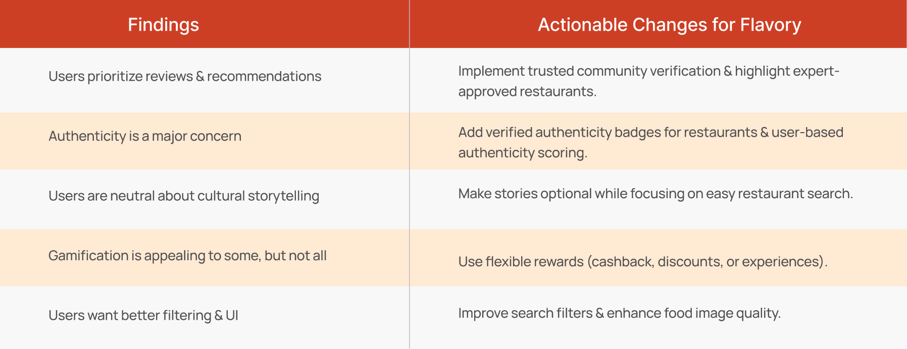

Flavory-Discover Culture through food
AI-powered food exploration, personalized for taste and trust.
Project Overview
Flavory is designed to address the challenge of discovering authentic cultural food while enhancing community-driven engagement. Many users struggle to verify food authenticity and navigate overwhelming choices. Flavory offers a trusted food discovery platform with a focus on user-verified authenticity and personalized recommendations.

My Role
UX Researcher
UX Designer
Web Designer
Time
2025
Tools
Figma
Photoshop
Research Tools
Deliverables
MVP Prototype
User Testing Report
Case Study
“How might we encourage users to explore cultural cuisine
in a fun and meaningful way?”
MVP Concept & impact
(features)
-Discover verified authentic restaurants through community reviews.
-Receive AI-powered personalized recommendations based on flavor preferences.
-Engage socially by following food journeys from friends and experts.
-Earn incentives through user participation and verified contributions.
Challenges & solutions
1. Building Cultural Trust
Users were unsure which restaurants offered truly authentic experiences. Traditional star ratings felt vague or misleading.
Solution: We introduced community-verified reviews, expert-endorsed highlights, and storytelling through restaurant pages.
3. Keeping Exploration Simple
While users liked personalization and cultural content, they didn’t want to feel overwhelmed by filters or dense info.
Solution: We streamlined the search flow with intuitive filters (taste, dish, country), short stories, and visual-first layouts.
User Research
& Surveys
-Understand how users currently discover restaurants.
-Identify pain points with current platforms.
-Learn motivations behind food exploration.
Research Methods
To better understand user behavior and pain points, I created a Google Form survey and distributed it to local food lovers, students, and newcomers. The survey collected 14 responses, focusing on users’ restaurant discovery habits, trust in review platforms, and expectations around cultural food experiences.
Watch the screen recording for survey design and a quick overview of the results.
Persona

Final Findings and Actionable Steps from Serveys
Competitive Analysis
To identify design opportunities, I compared three popular food and restaurant platforms.
Yelp
✅ Strengths: Massive review base, location-based filtering.
⚠ Weakness: Lacks cultural storytelling, overwhelming layout.
Google Maps
✅ Strengths: Easy access to nearby restaurants with reviews.
⚠ Weakness: No taste-based or cultural exploration tools.
OpenRice
✅ Strengths: Strong in Asian markets, active foodie community.
⚠ Weakness: Limited reach outside Asia, dated UI.
Key Findings & Insights from Research
- 70% of users rely on word-of-mouth or local friends for authentic food.
- Users find Yelp reviews too generic and often misleading.
- Most users don’t care about stars—they want real stories.
- Authenticity is valued over popularity.
- People love challenges and stories when eating out.
- Visual and social proof (videos, friends' recommendations) increase trust.
strategy
To design an engaging and purposeful food discovery experience, Flavory’s product strategy focuses on three key pillars: Explore, Engage, and Earn.
Prototyping & Testing
To design an engaging and purposeful food discovery experience, Flavory’s product strategy focuses on three key pillars: Explore, Engage, and Earn.
User flow
User Juourney Map

Low-Fidelity Wireframes


High-Fidelity MVP Prototype